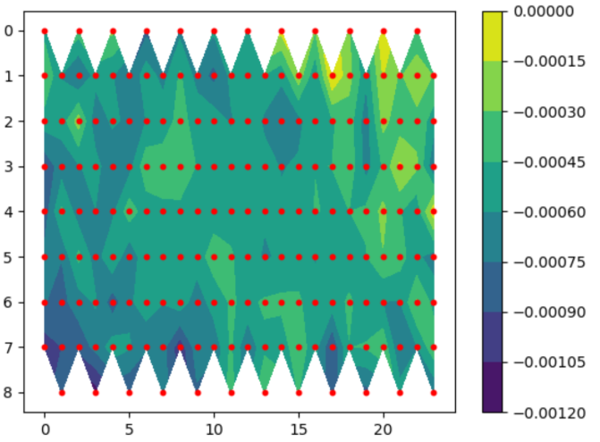
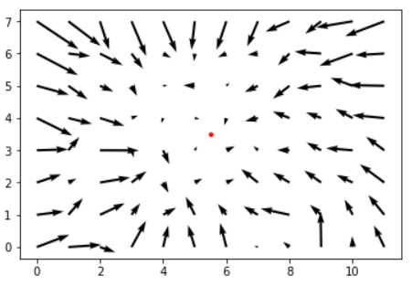

As part of the R&D process we aimed to determine the shrinkage rate of the plates after injection molding. Despite this project not working as expected, there are some interesting things I did to try to get it to work. The code was written in Python, using jupyter as a quick prototyping tool.
# detects ports in backlit plate
def size_detector(image_location, threshold=100):
# read an resize the image
image = cv2.imread(image_location, 0)
image = cv2.resize(image, None, fx=4, fy=4)
# blur the image to make threshold cleaner
image = cv2.GaussianBlur(image, (5, 5), 0)
# threshold the image to isolate the port locations
ret, im_bw = cv2.threshold(image, threshold, 255, cv2.THRESH_BINARY)
# find the contours of the image
im2, contours, hierarchy = cv2.findContours(im_bw, cv2.RETR_EXTERNAL,
cv2.CHAIN_APPROX_SIMPLE)
# filter contours by area (to avoid noise) --> output list of filtered contours
locations = []
for contour in contours:
area = cv2.contourArea(contour)
if area < 30:
continue
elif area > 1000:
continue
else:
locations.append(contour)
print("Number of contours:", len(locations))
# output an image showing the contours located
color_image = cv2.imread(image_location)
color_image = cv2.resize(color_image, None, fx=4, fy=4)
plot_im = cv2.drawContours(color_image, locations, -1, (0,255,0), 5)
cv2.imwrite('test.jpg', plot_im)
location_dict = {'X':[], 'Y':[]} # dictionary to store the X and Y locations of the contour centroids
# store the centroid X and Y locations to matching lists
for l in locations:
M = cv2.moments(l)
x = int(M['m10']/M['m00'])
y = int(M['m01']/M['m00'])
location_dict['X'].append(x)
location_dict['Y'].append(y)
# convert the dictionary of X and Y locations to a dataframe
data_locations = pd.DataFrame(location_dict)
# return a dataframe of the X and Y locations
return data_locations
Libraries
The port identification script found the contours of the backlit holes in the plate, then determined the contour characterstics of the points. The holes were also identified based on their position in the image. All of this data was saved to a csv file using Pandas.
Using the csv position data from each image, the plate shrinkage was calculated. 
I was also able to calculate the direction of the shrinkage on the plate. The shrinkage direction had a rotational element to it so this graph is showing a angle corrected version of the vectors. I used a rotational matrix to correct the plate rotation. 